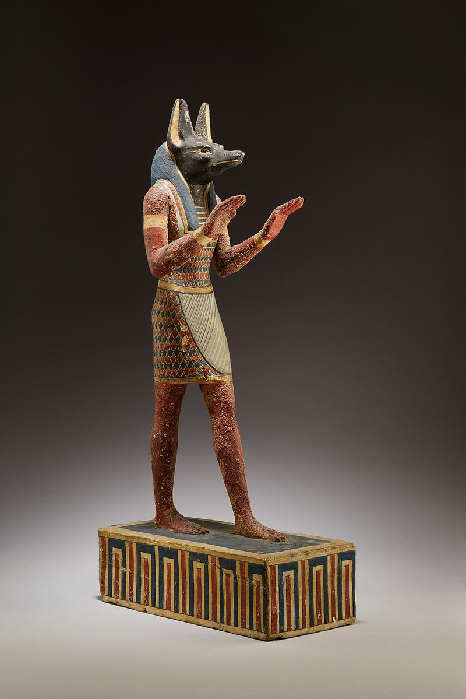
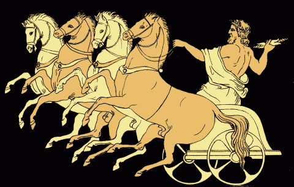
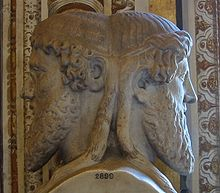

Babilóniai vallás
A babilóniaiak hatalomátvételével, a Kr. e. 18. századtól kezdődően a mezopotámiai vallásosság újra némi változáson ment át. A régi istenek megmaradtak, bár nevük megváltozott, és új istenek is feltűntek. A nagy istenek – Anu, Enlil, Éa – fokozatosan elvesztették fensőbbségüket a kultuszban. Az istenvilág élére mint babiloni főisten, Marduk került, továbbá a hívek Istárhoz és főként Samashoz fordultak.

Egyiptomi vallás
Az ókori egyiptomi vallás az egyiptomi emberek több mint 4000 évig fennálló hitvilágának öröksége a kereszténység és az iszlám előtti időkből, melyről ismereteink a hivatalos egyiptomi teológiából és a lakosság felső rétegeinek kultuszemlékeiből származnak. E vallásból a mai fogalmak szerinti dogmatikus rögzítés hiányzik, az egyiptomi világképnek azonban egységes színezetet ad a vallási mítoszokban a világrend harmóniájára való törekvés megnyilvánulása.

Görög vallás
A görög mitológia az ókori hellének vallásából származó mítoszok gyűjteménye. Ezeket a történeteket minden régi görög ismerte, és bár néhány korabeli filozófus megkérdőjelezte hihetőségüket, a hétköznapi emberek szertartásai és világnézete alapjául szolgáltak.

Római vallás
A római mitológia gyűjtőfogalom az ókori rómaiaknak az istenekről és hősökről alkotott elképzeléseire. Az eredeti római vallás leginkább a természeti erők és események megszemélyesítéséből állt. Az i. e. 5. századtól kezdve a rómaiak – etruszk közvetítéssel – elkezdték átvenni a görög mitológia alakjait. Így a római istenek közül soknak van görög megfelelője.
